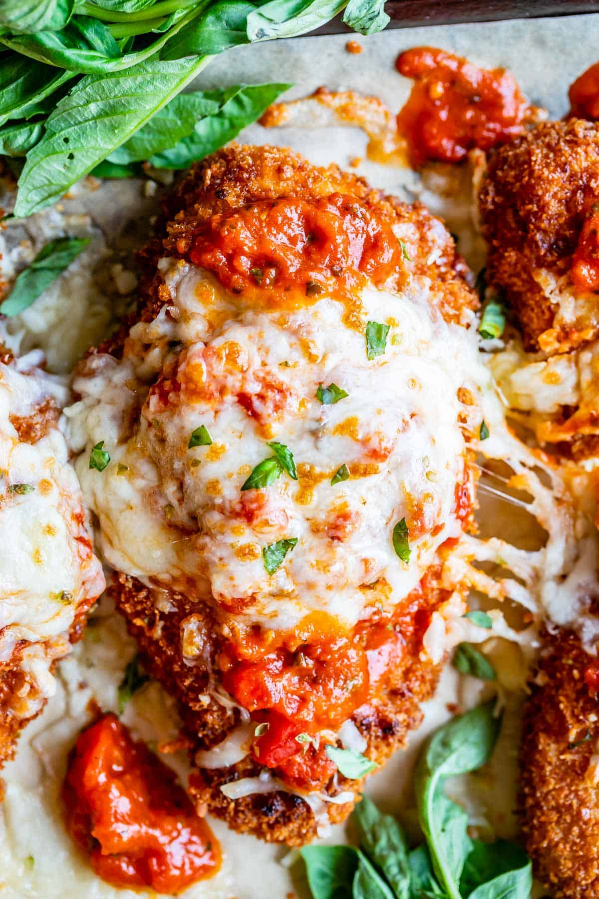

Chicken Parmesan
A cheap and easy meal, this can end up being one of the best meals of your week! Fried chicken cutlets, marinara, cheese? What could be better?

Ingredients
- chicken breasts
- eggs
- buttermilk
- garlic powder
- kosher salt
- pepper
- flour
- cornstarch
- oregano
- cayanne pepper
- panko bread crumbs
- vegetable oil
- 1 jar marinara sauce
- petite diced tomatoes
- dried basil
- fresh basil (optional)
- spaghetti
- parmesan cheese
- mozzerella cheese
Steps
- Mix spices, flour, and cornstarch to create a dredging station. Beat eggs and mix with buttermilk.
- Marinate the chicken in the egg mixture, then coat in the dredging. Dip back into the egg mixture, and then coat it in panko bread crumbs.
- Fry chicken at 400 degrees F. Ensure the oil is back at 400 degrees F between batches of chicken.
- While the chicken is frying, simmer your sauce and boil your noodles in separate pots.
- Place the fried chicken on a baking sheet, top with marinara sauce and your cheeses, and broil in the oven.
- Serve hot! Mmm, delicious.